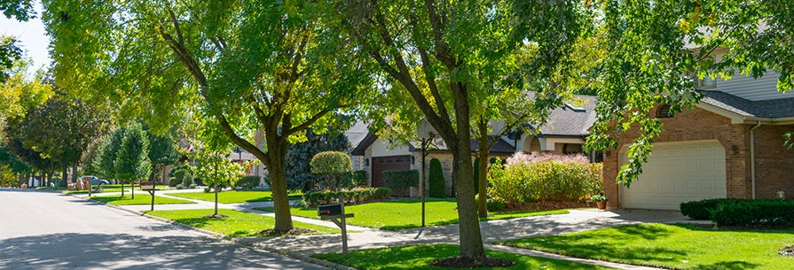

Costs
Grinding Multiple Stumps on One Property: What Changes

One stump and five stumps aren't just a difference in scale, they change how the whole job gets approached.
One Mobilization Instead of Several
Equipment and crew mobilization is one of the fixed costs behind the $200 minimum fee on any job. When several stumps on the same property are handled in one visit, that mobilization cost is effectively spread across all of them instead of repeating for each one.
Access Still Matters for Each Stump
Even when stumps are grouped into one visit, each one still has its own access considerations, size, and root situation. A quote that accounts for multiple stumps needs to look at each location individually, not just count them as a batch.
Cleanup and Backfill Decisions Multiply
If cleanup and backfill are wanted, that decision applies per stump location, not as a single yes-or-no for the whole property. Some spots might make sense to restore for grass while others don't need it.
Why a Same-Day Quote Helps Here Especially
With more variables across multiple locations, a same-day, no-obligation quote that actually looks at each stump is more useful than trying to estimate a multi-stump job from a phone description.
Common questions
Is it cheaper to grind multiple stumps in one visit than separately?
Generally yes, since mobilization is one of the fixed costs behind the minimum fee, and handling several stumps together spreads that cost.
Do all the stumps on a property need the same cleanup decision?
No, cleanup and backfill can be decided per location, depending on what each part of the yard needs afterward.
How is a quote different for multiple stumps versus one?
Each stump still needs its own look for size, access, and roots, so a multi-stump quote accounts for each location individually rather than just totaling a count.